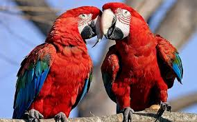
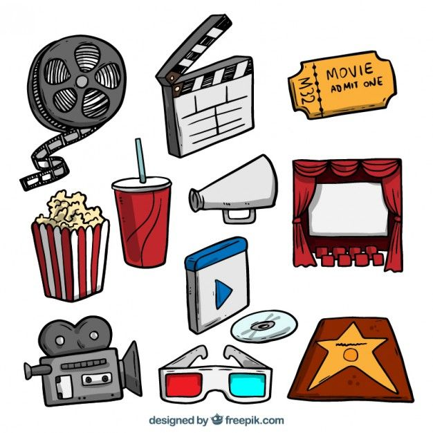
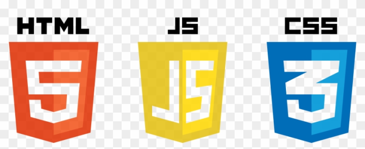
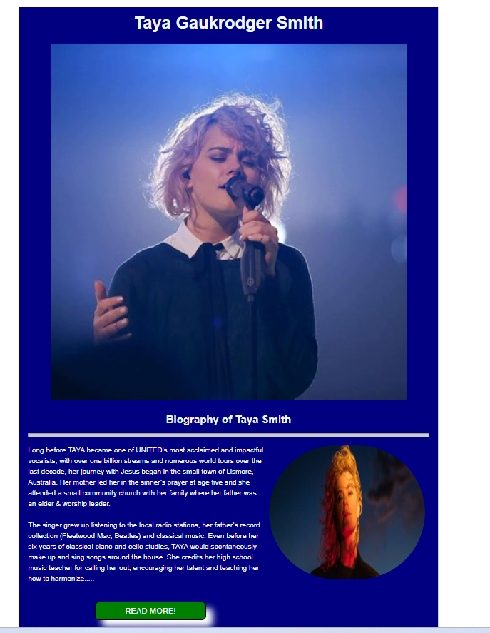
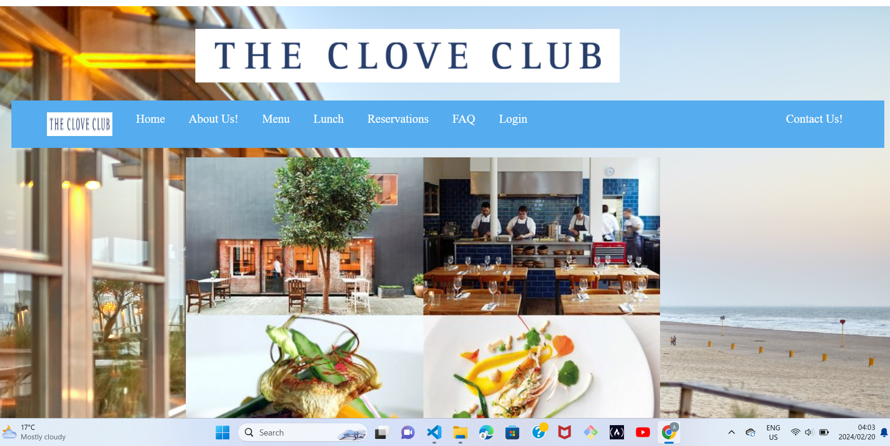
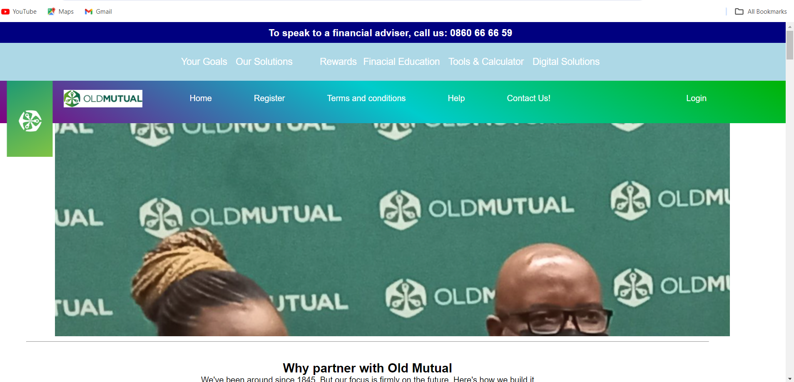
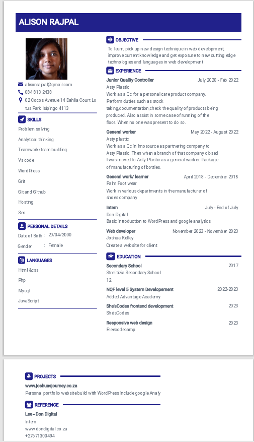

Hello, It's Me
Alison Rajpal
And I am a frontend developer
I am from Durban
About
Alison Rajpal
Hello there, I am Alison or you can call me Ally. I am currently a student at Added Advantage Academy, which is a SETA learnership in System development. So you guessed it I am a programmer or going to be one very soon. Born and raised in Durban and never left the country yet!. I am 23 years old with a passion for I.T apparently that is what I found out during my time at Added. This whole thing about building something out of nothing is what I enjoyed.
My strengths:
- Trustworth
- Creative
- Self Learner
- Kindness
- Open mindness
- Morality
- Determination
I am extremely trustworth when I was working in my last job. The supervisor put me incharge to oversee all operations because she had to go to the other plant because no one was present to oversee that side of operations for a few days on end.
Well coding requires you to be creativein order to make visual appleasing applications and to be self learner because in coding there is only a certain amount of content that they teach you but the rest if you are curious about it them you have to do it on your own.
In life it naturally requires you to be determined and hardworking if you want anything in this life otherwise there is nothing that you can get from it.
In any stage or any industry or where ever you are it requires you to be open minded about situations and thing in order to get the very best out of you.If you are not open-minded then you won't be okay with changes or venturing out to uncharted terrorities and then you will miss out on amazing opportunities.
Weakness:
- Impatiences
- Fear
- Timid/shyness
- Introvert
| So now we get to the good stuff like general stuff like what makes me Me or unique . I like the calming colors like a deep forest green and cooling beach blue.I like birds exotic parrots and I owned two of my own and dolphines.My hobbies include reading fictional novels,writing on wattpad,listerning to music,astronomy/starglazing(it a hobbie that I enjoyed doing from the time I was young and still do)and in occasionally I do dabble in sports when it situates me like table tennis and now coding also became an hobbie that I picked up this year. So you guessed it, I have a very chill and relax persona,which is friendly,a dash of a perfectionist just little,strongly opinionate- so if we ever gets into an argue about a topic I am passionate about just beware because don't stand a chance,a good listern and communicator. Definietly not the girly girl type mine is probably nerd/writer/cool chic/advice-giver that is everyone friend that is basically what all the people that I am close to say about me. |
  |
Skills
- Web Development
- Google Analytics
- Problem Solving
- WordPress
- Javascript
- Html5
- Css
- Php
- Sql
|  |  |
|
 |
 |
Projects
Below is all my projects that I have done before for web development to build my knowlegde and understanding about coding and programming
|
Caculator app that performs basic mathematically operation using Html, css and Javascript
|

Tribute page designed with html,css, Javascript. A real simple tribute page with a read more or less button dedicate to a christian musical atrist
|
|

The clove club resturant website is about a resturant based in England that required using Html,css, Javascript. A contact form for the website.
|

Old Mutual is a clone website of the old mutual website using html,css,javascript, php and sql for the backend for the login page
|
|
CMT website is a website that uses both frontend and backend technologies such as html,css and php and sql
|
Resume
Here below is my c.v
Contact information
Contact!
Feel free to contact us with any inqueries....
Specialise in web-designs for industry productivity
Need a website to create more hype for your business, then contact us...
We do all types of websites for small,meduim and large business.
available 24/7 for inquries